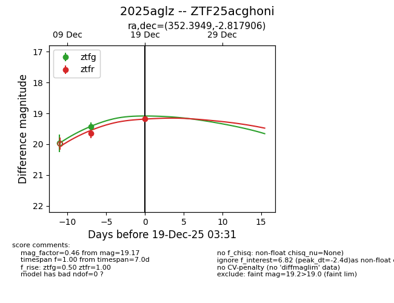
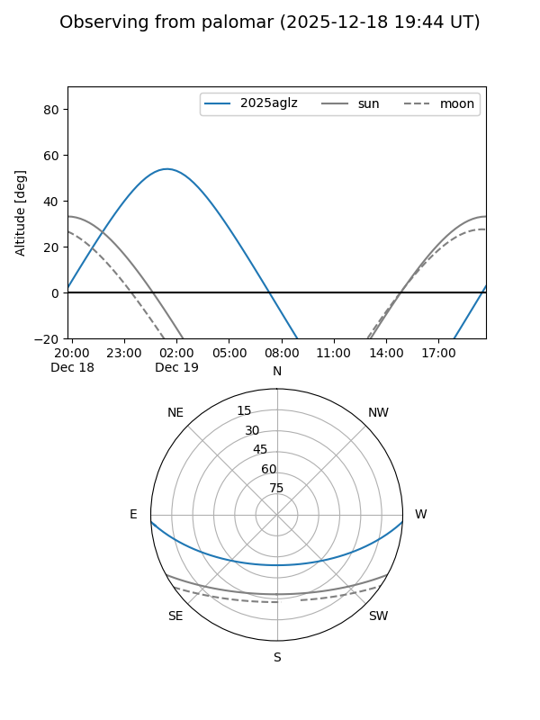
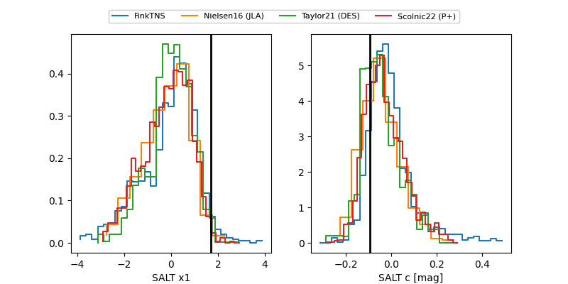

2025aglz
Target 2025aglz at 2025-12-21 02:38
Aliases and brokers:
FINK: fink-portal.org/ZTF25acghoni
Lasair: lasair-ztf.lsst.ac.uk/objects/ZTF25acghoni
ALeRCE: alerce.online/object/ZTF25acghoni
TNS: wis-tns.org/object/2025aglz
YSE: ziggy.ucolick.org/yse/transient_detail/2025aglz
alt names
ZTF25acghoni (ztf,fink_ztf)
2025aglz (tns,yse)
Coordinates:
equatorial (ra, dec) = 352.3949,-2.81791
equatorial (HMS+DMS) = 23:29:34.78,-02:49:04.46
galactic (l, b) = (80.5697,-58.78498)
Flags:
Photometry:
last ztfg=19.11, ztfr=19.17
3 ztfg, 2 ztfr detections
Lightcurve

Visibility


Additional plots
